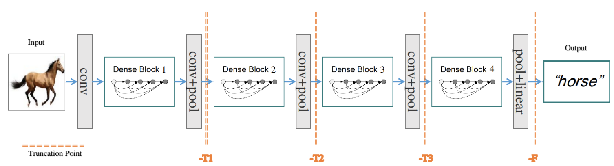
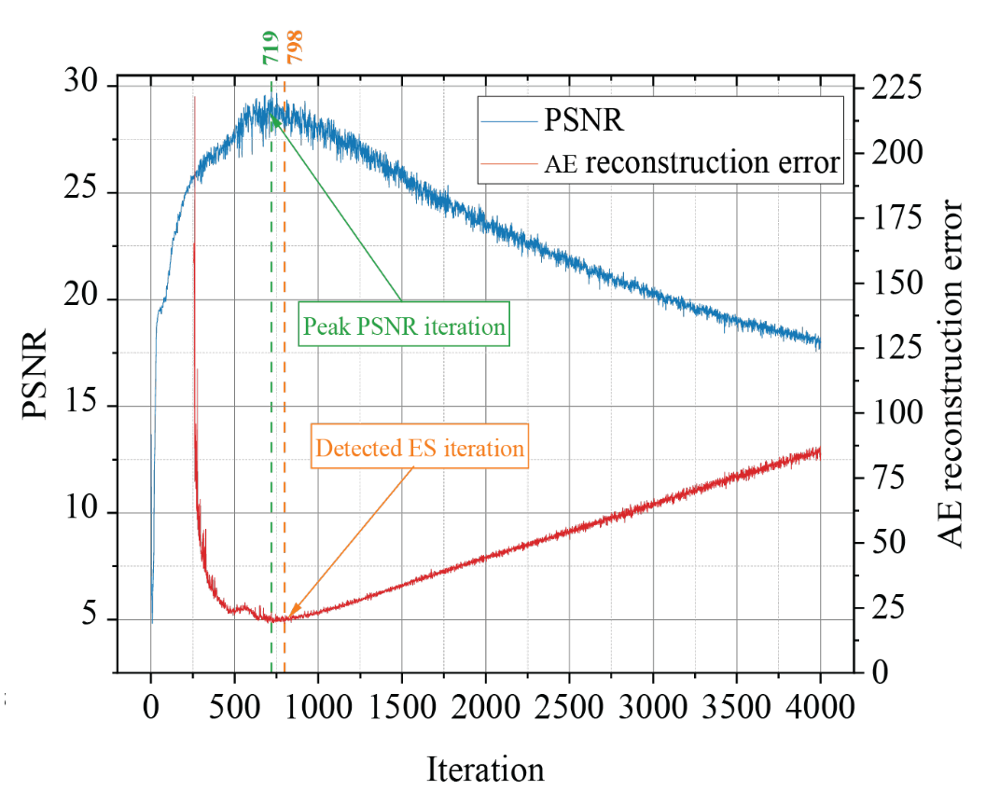
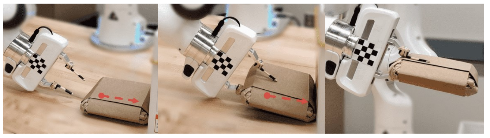
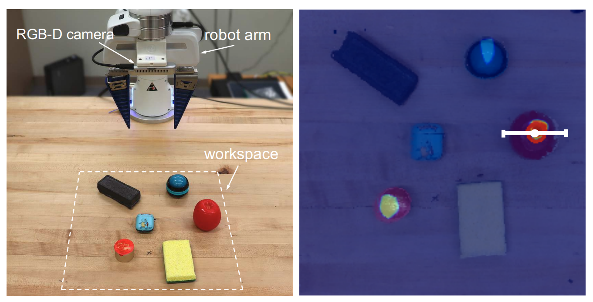
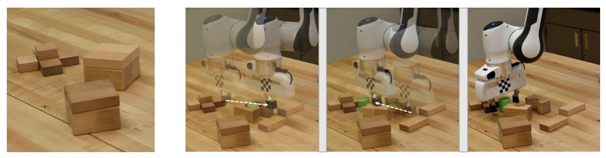

Research and Publicationis
This page lists my research publications.
2021

Rethink Transfer Learning in Medical Image Classification.
Le Peng, Hengyue Liang, Taihui Li, Ju Sun
Submitted to AAAI Conference on Artificial Intelligence (AAAI), 2022.

Self-Validation: Early Stopping for Single-Instance Deep Generative Priors.
Taihui Li, Zhong Zhuang, Hengyue Liang, Le Peng, Hengkang Wang, Ju Sun.
Accepted to British Machine Vision Conference (BMVC) 2021.
2020

Learning Visual Affordances with Target-Orientated Deep Q-Network to Grasp Objects by Harnessing Environmental Fixtures.
Hengyue Liang, Xibai Lou, Yang Yang, Changhyun Choi
Accepted to IEEE International Conference on Robotics and Automation (ICRA) 2021, Xi'an

Attribute-Based Robotic Grasping with One-Grasp Adaptation.
Yang Yang, Yuanhao Liu, Hengyue Liang, Xibai Lou and Changhyun Choi
Accepted to IEEE International Conference on Robotics and Automation (ICRA) 2021, Xi'an
2019

A Deep Learning Approach to Grasping the Invisible.
Yang Yang, Hengyue Liang and Changhyun Choi
Accepted to IEEE Robotics and Automation Letters (RA-L) 2020